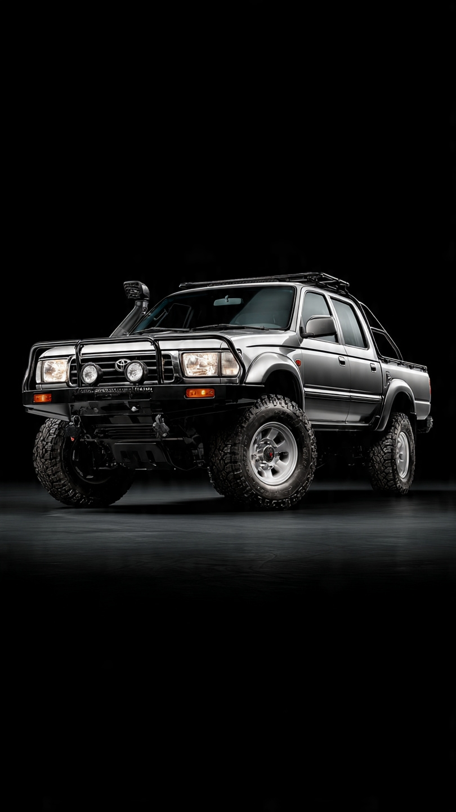
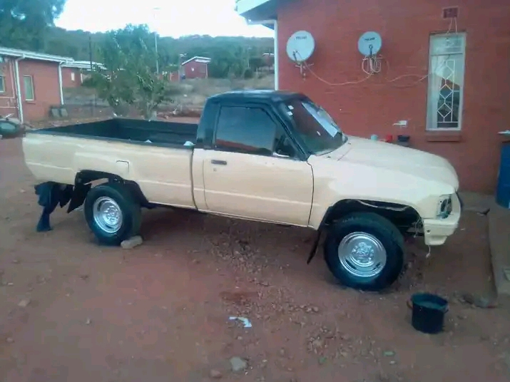

Hello, I'm Orefile - goCar lover, 4x4 guy, and building stuff from Gaborone. I drive a Toyota Hilux 4x4, 2 Tonne Engine.
Contact Me: +267 77 364 455 / +267 74 672 454

📍 Locating you in Gaborone...
Breakdown? Accident? Battery dead? Hilux stuck?